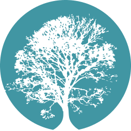

PremedicAgencia Comercial Oficial Pedir cartillaLa cartilla de Premedic Medicina Privada, abierta: sanatorios de primera línea, centros propios y un médico en el celular a cualquier hora.
Antes de elegir una prepaga, mirá a dónde vas a ir cuando la necesites. Acá está, con nombre y apellido.
Pedir la cartilla de mi zonaPrestadores destacados según el plan. La cartilla completa de tu zona te la manda la asesora por WhatsApp.
Atención en centros de Premedic, con turnos y credencial desde la app.
PMC · consultas sin coseguro
Smile Group · odontología
Multidiagnóstico · desde 2007
Vacunación a domicilio
Médico por chat o videollamada las 24 h, los 365 días, sin cargo.
Credencial virtual en la app: sin tarjeta física, con turnos y autorizaciones.
Sí. Todos los planes acceden a la red de centros médicos y clínicas; el 300 suma Trinidad, Finochietto, Las Lomas, Bazterrica y CEMIC, y el 400 suma Británico, Alemán, ICBA, San Lucas y Angelus.
No. La credencial virtual vive en la app Premedic Móvil y vale en todos los prestadores. Desde la misma app pedís turnos y autorizás órdenes con seguimiento en tiempo real.
Médico por chat o videollamada las 24 horas, los 365 días, sin cargo: consultás y recibís las órdenes en el celular. Y si viajás, Cardinal Assistance te cubre en el país y países limítrofes.
Escribinos por WhatsApp con tu localidad: una asesora te manda la cartilla de tu zona junto con el precio de cada plan para tu grupo familiar. Sin formularios ni llamadas.
Decinos tu localidad y te mandamos la cartilla de tu zona con la cotización de cada plan. Responde una persona del equipo, hoy.
Pedir cartilla y precio